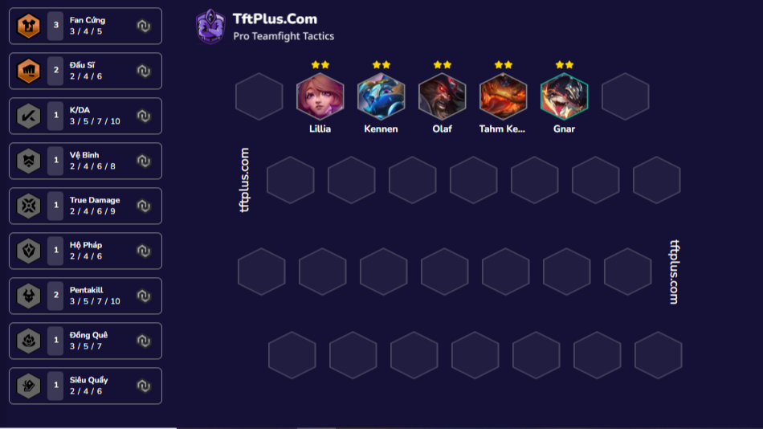
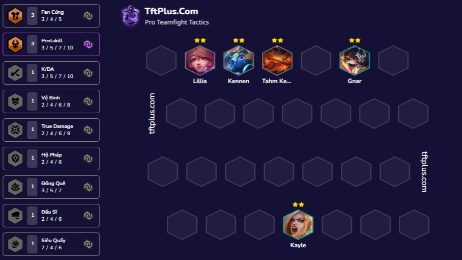
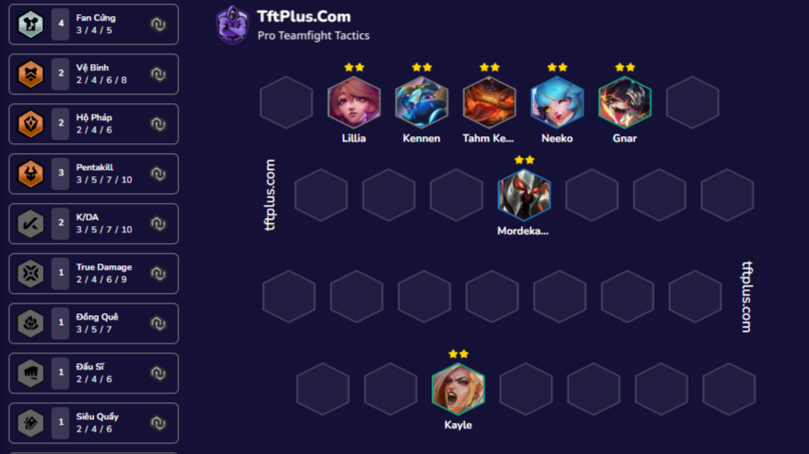
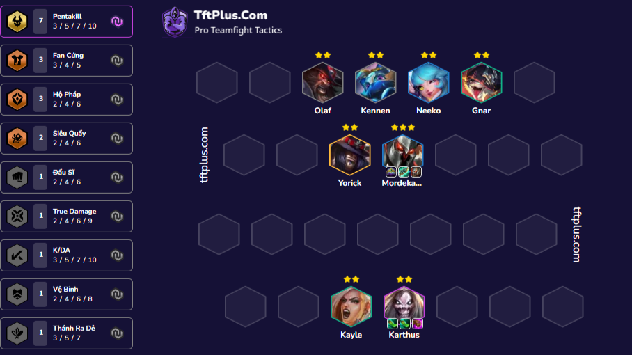
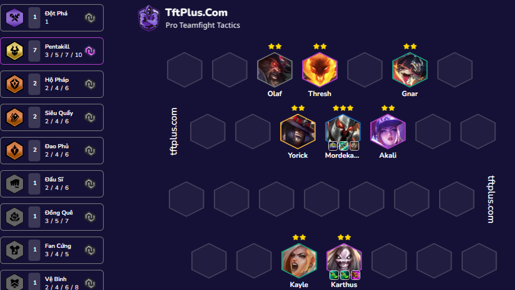

Bài đánh này là bài tủ của chủ page (bắt buộc đánh nếu đầu game có form bài cống hiến)
Khỏi đầu nhẹ nhàng với các siêu sao là dame để có thể đép máu tốt nhất (Tránh cút sớm nhá)
Gợi ý với siêu sao pentakill olaf hoặc kayle là ngon nhất bắt đầu tích tiền ở chess 5 nên kẹp fan cứng


Tích tiền sao đó up cấp một cách từ tốn thư thái như người lắm tiền và dừng lại để slow roll ở cấp 7 với form bài như sau (đã bán siêu sao cũ để có thể roll morder siêu sao)

Lưu ý:Không ghép đồ sớm để có thể biết nên bỏ fan cứng hay không nếu đồ đẹp thì bỏ con không thì phải kẹp thêm fan cứng
Hoàn thành form như này ở chess 8 nếu ko có vương miện cho MORDERKAISER

Còn nếu có rồi thì để form kẹp thresh và akali để có thế dập tất cả mọi thứ trừ 5 vàng 3 sao

Chi tiết cách ghép đồ ở đây cho bạn nào cần